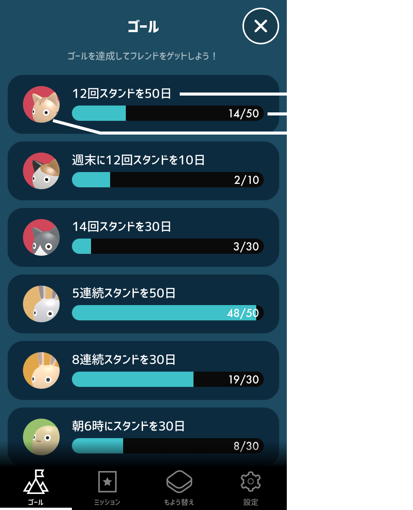
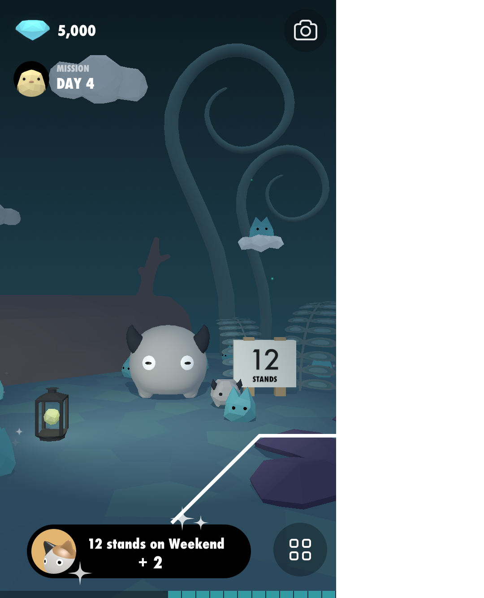
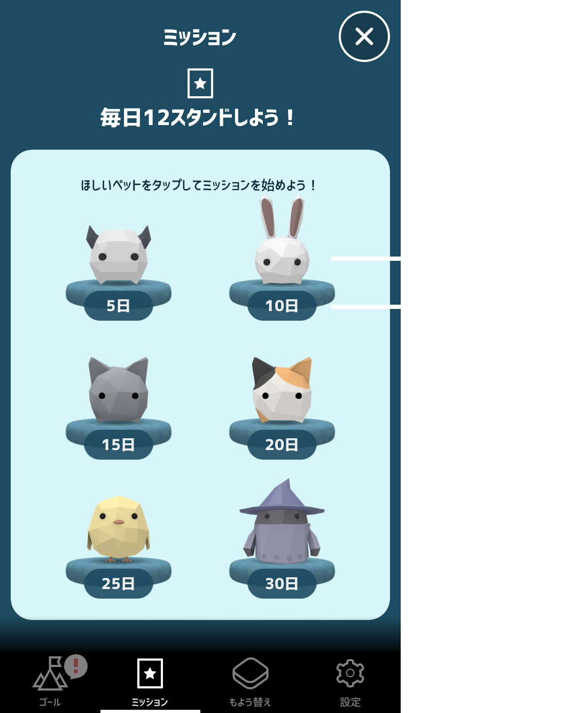

ヘルプ
基本の使い方
1時間につき1分以上歩くと、1スタンドです（歩数の場合、80歩以上）。
スタンドの判定には、Appleのヘルスケアアプリのデータを利用しています。
通常は「歩数」が、Apple Watchご利用の方は「スタンド時間」が使われます。
メイン画面

ジェムのモンスター Gemmy（ジェミー）

小さくて青い彼らは、ジェムのモンスター、Gemmy（ジェミー）。あなたがその日スタンドした数だけ現れます。
たまにお土産のジェムを持ってきているので、光ってたらタップしてみてね。ジェムは、新しいランドや、ジェミーの着せ替えの購入に使えます。

ゴール
スタンドのゴールを達成することで、新しいフレンド（メインキャラクター）をゲットできます。
ルール：
・1時間につき1分以上歩くと、1スタンド
・1日の最大スタンド数は、24スタンド
・ゴールの計算は、1日ごと
※ 12スタンドや連続スタンドなどは、日をまたいでは計算されません。

ゴールの進捗があると、下記のようにお知らせされます。

ミッション
「12スタンドを毎日」のミッションを完了すると、新しいペットをゲットできます。どのペットを選ぶかによって、必要な日数が変わります。ほしいペットをタップして開始してね。
ルール：
・1日に12回以上スタンドしよう（1時間につき1分以上歩くと、1スタンド）
・選んだ期間中、「毎日」12スタンドです
・1日でも途切れるとミッション失敗
